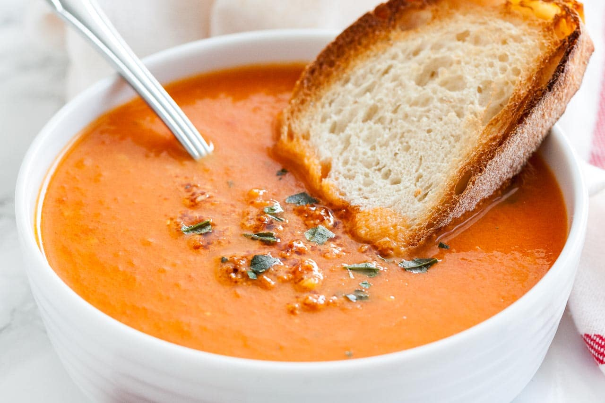

Roasted Tomato Soup

This soup recipe is very simple and easy. The tomatoes are sliced and then roasted in the oven with some garlic and olive oil. along with the roasted tomatoes, the juices of the tomatoes and garlic with the olive oil is then pureed. add a dash of pepper and salt and the soup is ready. Easy and no cooking on the stovetop involved.
Ingredients
- 3 pounds roma (plum) tomatoes, quartered
- 1 yellow onion, halved and quartered
- Half red bell pepper, chopped
- 3 tablespoons olive oil
- 1 tablespoon sea salt
- 3 cloves garlic, halved
- 2 teaspoons dried basil
- 1 teaspoon dried parsley
Steps
- Preheat oven to 400 degrees F (200 degrees C). Line a large baking sheet with aluminum foil.
- Spread tomatoes, onion, and red bell pepper in 1 layer onto the prepared baking sheet. Drizzle olive oil over tomato mixture and season with salt and pepper.
- Roast in the preheated oven for 30 minutes; add garlic and continue roasting until tomato mixture is tender, about 15 more minutes.
- Put half the tomato mixture into a blender. Cover and hold lid down; pulse a few times before leaving on to blend until smooth, adding a small amount of the warm chicken broth if liquid is needed. Pour pureed tomato mixture into stockpot with chicken broth. Puree remaining half of tomato mixture and add to chicken stock mixture, mixing well. Simmer for 5 minutes.